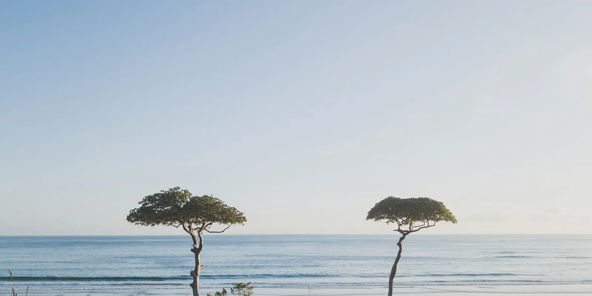

Where we work(Central Valley)
Architects in Heredia

Heredia is the seat of the canton and the province of the same name, 1,158 m above sea level. A year here brings 2,384 mm of rain, 96% of it from April to January. Permits for a lot go through the Municipalidad de Heredia.
We design houses, rental villas and small hotels in Heredia and anywhere else in Costa Rica, from the first site visit to the CFIA permit.
(At a glance)
- Canton
- Heredia
- Permits
- Municipalidad de Heredia
- Elevation
- 1,158 m
- Rain
- 2,384 mm a year
- Dry season
- February to March
- Liberia airport
- 3 h 50 min by road, 216 km
- San José airport
- 20 min by road, 13 km
- Sunlight
- 1,988 kWh/m² a year
- Solar power
- 1,617 kWh a year per kW of panels
(The year)
The dry season runs from February to March: 2 months under 60 mm of rain. The wettest month is September, with 373 mm.
Afternoons are hottest in April, at 27 °C on average, and coolest in December, at 24 °C. Nights stay between 14 and 16 °C.
Best time to start*
The best time to start building here is from November to March. Those 5 months bring 443 mm of rain in total; the other 7 bring 1,941 mm, 4 times as much.
Earthworks, foundations and concrete pours need dry ground, and many roads to the lots only stay passable without rain. On a day with 10 mm of rain or more, that work usually stops.
A 4-month phase of earthworks, foundations and structure that starts in November meets about 6 such days here; the same phase started in April meets about 22. Starting in November saves about 15 days of stopped work: some 2 weeks of crew and machinery paid to wait, and the pumping and drainage that wet excavations need. So the permit should be ready by October. Still, it is a recommendation, not a rule: building goes on through the rains, more slowly, and no project should sit for months waiting for the dry season.
(The wind)
Up to 7 km/h7 to 1414 to 2222 to 29Over 29
In the dry season the afternoon wind at Tobías Bolaños airport comes from the northeast.
Rooms that open to the wind on one side and away from it on the other cool themselves, and a roof that sheds the rain lets them stay open in the wet months too.
(Wind and sun)
(The sun)
Each dot is the sun at a whole hour, every three days: each figure-eight is one hour across the year, and the lines are the 21st of each month. Orange and red dots are the hours when the sun should stay off the glass.
The sun here is never far from overhead. At noon it stands 80° high in March and September and 57° in December, and from April 17 to August 27 it passes north of overhead, so walls and glass that face north take sun as well.
What heats a house is the low afternoon sun. It sets at 294°, west-northwest, in June and at 246°, west-southwest, in December. That side needs the deepest roof.
Sunrise falls between 5:14 and 5:59 all year, and sunset between 17:12 and 18:02.
The ground here gets 1,988 kWh of sunlight per m² a year, and solar panels make about 1,617 kWh a year for each kW installed.
(Building here)
A house of 300 to 500 m² to start with: change the project and the route redraws.
(Our work nearby)


(Questions)
When is the best time to start building in Heredia?
Ideally from November to March, so that the earthworks, foundations and structure fall in the dry season. A 4-month phase of that work started in November loses about 6 days to heavy rain, against about 22 if it starts in April, about 15 days of crew and machinery. It is a recommendation, not a rule: building goes on through the rains, more slowly, and no project should sit for months waiting for the dry season. To start then, have the permit ready by October.
Who issues building permits in Heredia?
The Municipalidad de Heredia. The drawings are filed first with the CFIA, through its APC platform, and the permit comes after the land use certificate and the water availability letter.
How hot does it get in Heredia?
Afternoons average 27 °C in April, the hottest month, and 24 °C in December. Nights stay between 14 and 16 °C. Shade on the west side and air moving through the rooms do more for comfort than anything else.
How far is Heredia from the airports?
By road, without traffic, 3 h 50 min from Daniel Oduber airport in Liberia (216 km) and 20 min from Juan Santamaría airport in San José (13 km).
Rain: CHIRPS climatology (CHPclim v2, Climate Hazards Center, UC Santa Barbara). Temperature and wind: measured at Tobías Bolaños airport, 5 km away, typical year 2011 to 2025 (Climate.OneBuilding.org TMYx, from NOAA observations), temperatures adjusted for elevation. Heavy-rain days: NASA POWER (MERRA-2), 2001 to 2020. Sun: calculated for the town's coordinates. Elevation: SRTM. Roads and places: OpenStreetMap. Gathered October 2026.